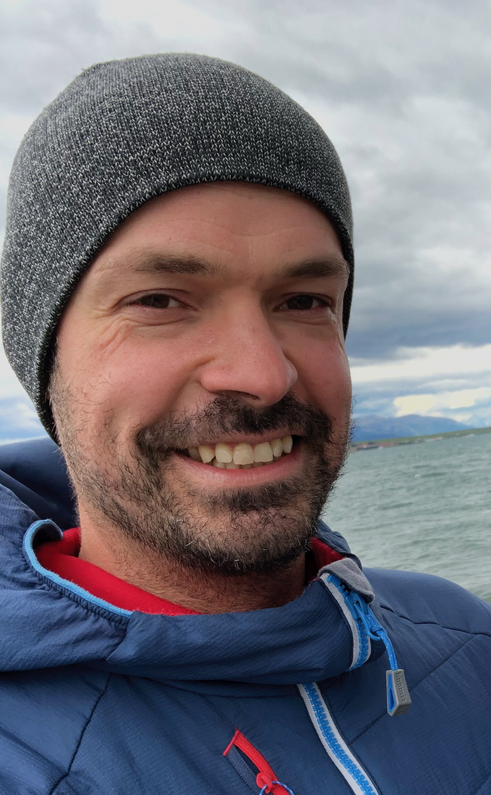
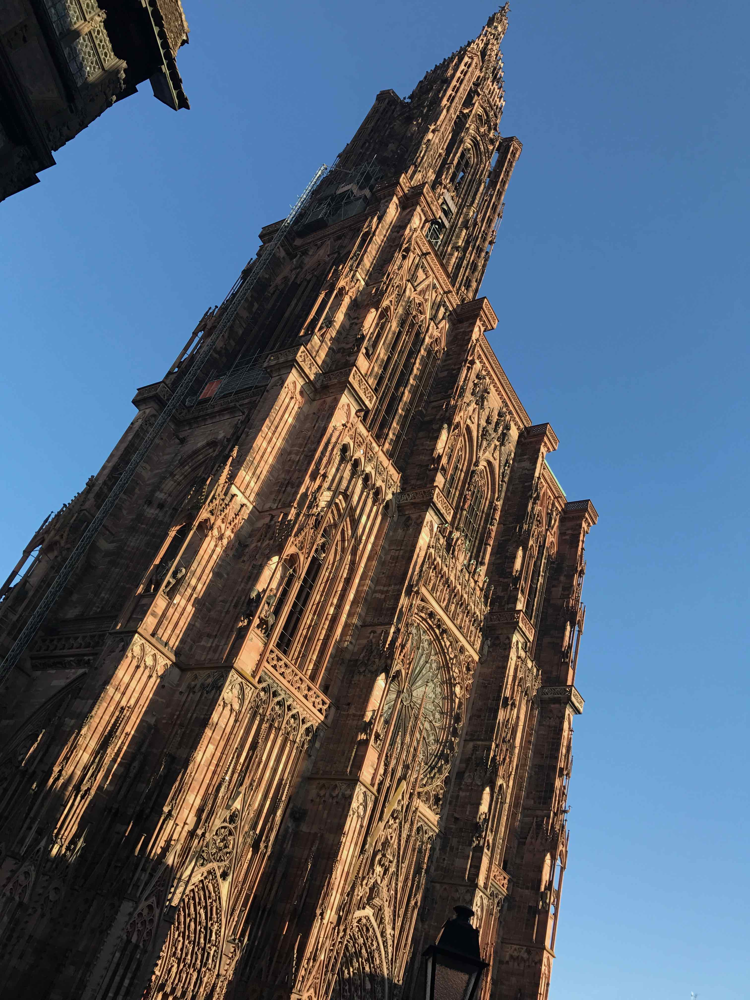
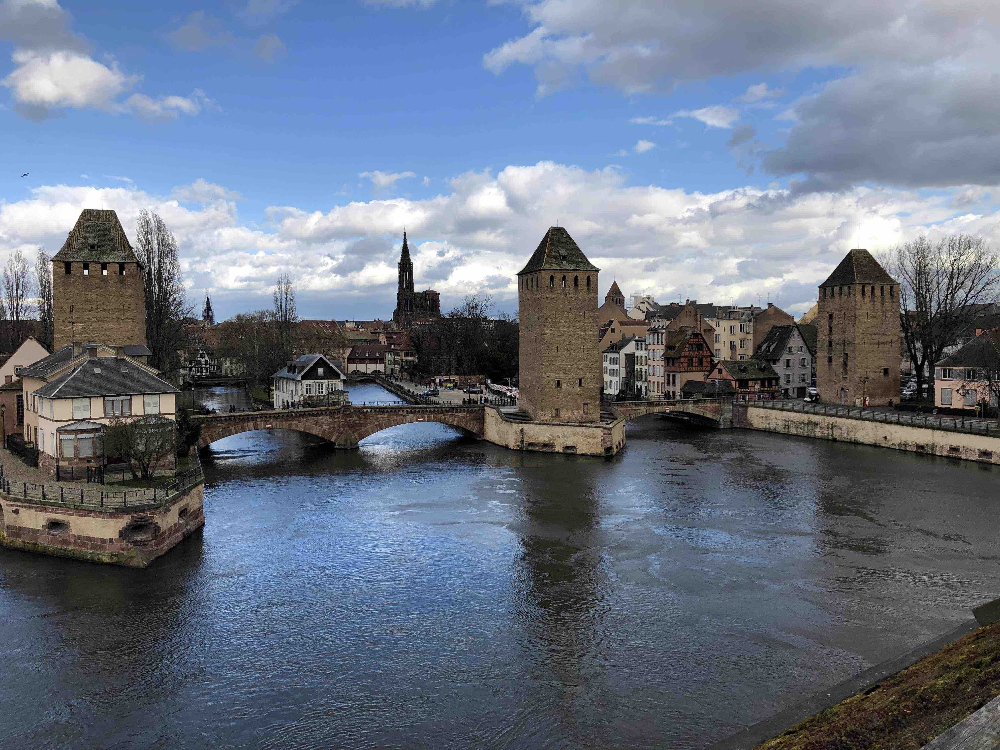
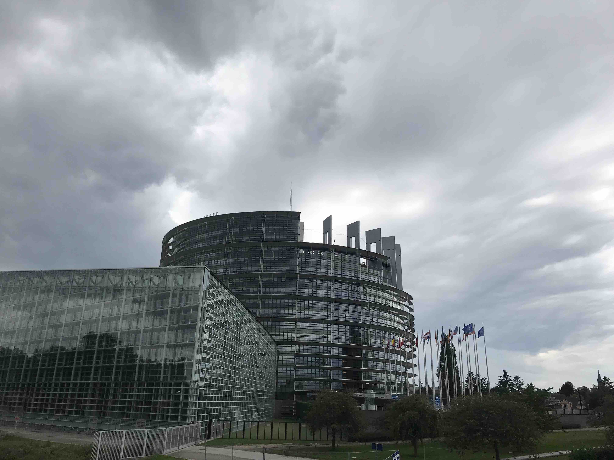
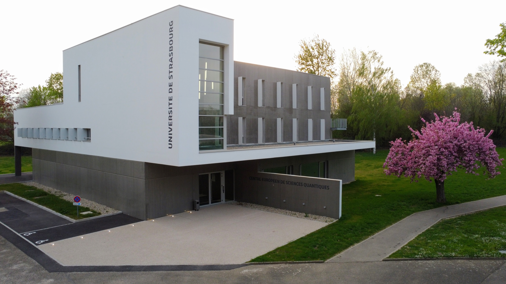

|

|
Johannes Schachenmayer
I'm a theoretical quantum physicist (CNRS scientist, CRCN)
researching and teaching at the Université de Strasbourg
in France. I work at the Centre Européen de Sciences Quantiques (CESQ) as part of the Institut de Science et
d'Ingénierie Supramoléculaires (ISIS).
|
|
|
|
Latest bits of news
-
20/12/2023 - New funding: My CNRS EMERGENCE project DINOPARC ("Disorder-induced non-classical states in polaritonic chemistry") has been accepted and will start soon. I'm looking for interested post-doc candidates.
-
08/12/2023 - Recordings from my lecturs at Les Houches and Cargèse are available (see Teaching)
-
18/07/2023 - Our recent work on: "Comparing bipartite entropy growth in open-system matrix-product simulation methods", has been published in:
G. Preisser, D. Wellnitz, T. Botzung, and J. Schachenmayer, Phys. Rev. A 108, 012616 (2023).
-
25/06/2023 - Thank you all for your numerous and excellent contributions that made EGAS 54 such a great success (https://www.egas54.org). Hope to see many of you again next year at EGAS 55.
-
17/03/2023 - I will be teaching at the Les Houches Predoc School (Oct. 9-20, 2023) on
"Ultracold molecules: quantum physics and applications".
Consider a visit and see: https://coldatoms2023.sciencesconf.org/.
22/10/2022 - Our recent work on the "Rise and fall, and slow rise again, of operator entanglement under dephasing"
has been published in:
D. Wellnitz, G. Preisser, V. Alba, J. Dubail, and J. Schachenmayer,
Phys. Rev. Lett. 129, 170401 (2022).
Trajectory
-
Habilitation (2019): Habilitation à diriger des recherches (HDR), Université de Strasbourg.
-
CNRS (2016): Tenured researcher position in Strasbourg.
-
Post-doc (2013-2016): JILA, Boulder, CO, US (group of A. M. Rey).
-
Visiting student/post-doc (2011-2013): University of Pittsburgh, PA, US (group of A. J. Daley).
-
Doctoral degree (2012): Dr. rer. nat, Universität Innsbruck, Austria.
-
Master degree (2008): Dipl.-Phys., Technische Universität München (TUM), Germany.
Strasbourg




|
|
|